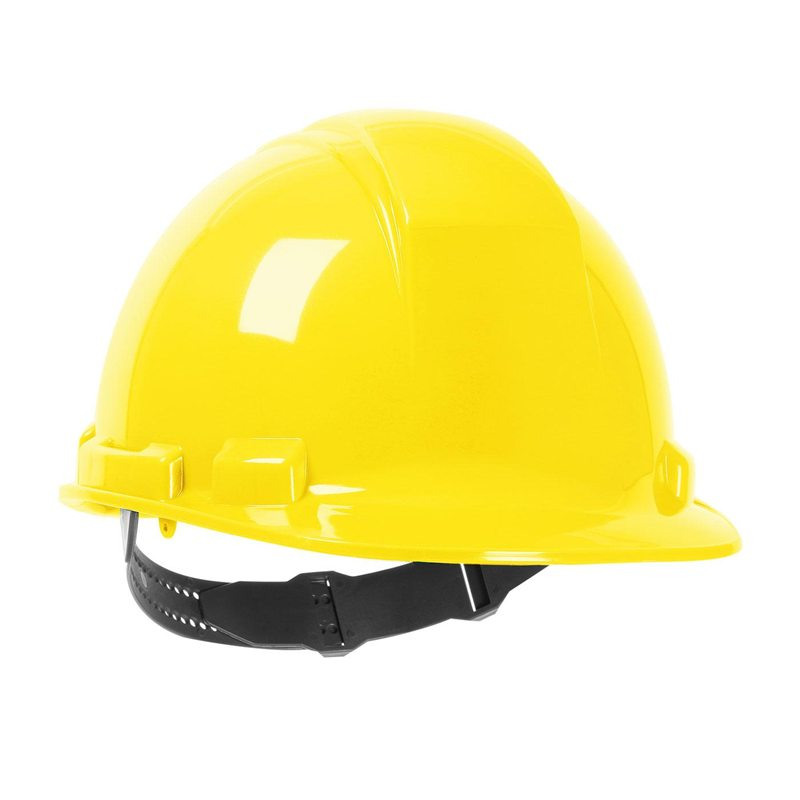
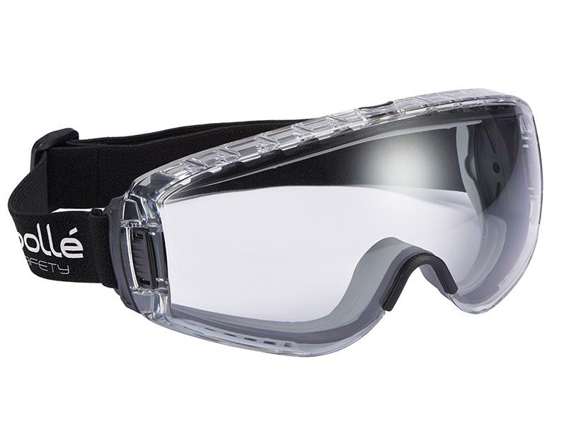

Thiết bị bảo hộ lao động là một trong những yếu tố không thể thiếu trong công tác bảo đảm an toàn tại các công trình xây dựng, nhà máy, xưởng sản xuất và nhiều lĩnh vực kỹ thuật khác. Việc lựa chọn đúng trang thiết bị không chỉ giúp hạn chế nguy cơ tai nạn mà còn góp phần nâng cao hiệu quả làm việc.
Tuy nhiên, trên thực tế, nhiều cá nhân và doanh nghiệp vẫn mắc phải những sai lầm khi lựa chọn sản phẩm bảo hộ. Dưới đây là 5 sai lầm phổ biến cần lưu ý.

1. Chỉ quan tâm đến giá thành mà bỏ qua chất lượng
Đây là một trong những sai lầm thường gặp khi mua sắm thiết bị bảo hộ lao động, đặc biệt đối với những đơn vị cần trang bị số lượng lớn.
Việc ưu tiên sản phẩm có giá thành thấp nhất mà không tìm hiểu kỹ về chất lượng, nguồn gốc và khả năng bảo vệ có thể khiến người sử dụng đối mặt với nhiều rủi ro.


Một đôi giày bảo hộ không đáp ứng yêu cầu kỹ thuật, một chiếc mũ bảo hộ không phù hợp với môi trường làm việc hay găng tay không có khả năng chống lại tác nhân nguy hiểm tương ứng đều có thể làm giảm hiệu quả bảo vệ.
Do đó, người mua cần cân nhắc đồng thời giữa giá thành, chất lượng, tiêu chuẩn kỹ thuật và mục đích sử dụng thay vì chỉ lựa chọn dựa trên yếu tố chi phí.
2. Lựa chọn thiết bị không phù hợp với môi trường làm việc
Mỗi ngành nghề có những đặc điểm và nguy cơ khác nhau. Vì vậy, không phải thiết bị bảo hộ nào cũng có thể sử dụng trong mọi môi trường.
Chẳng hạn, người làm việc tại công trường xây dựng cần được trang bị mũ bảo hộ, giày bảo hộ và áo phản quang phù hợp. Trong khi đó, người làm việc trong môi trường có nguy cơ tiếp xúc với hóa chất cần sử dụng găng tay, kính và thiết bị bảo vệ hô hấp được thiết kế tương ứng.
Việc sử dụng sai loại thiết bị có thể khiến người lao động không được bảo vệ đầy đủ trước những nguy cơ đặc thù của công việc.
Trước khi mua sắm, doanh nghiệp cần đánh giá điều kiện làm việc, nhận diện các yếu tố nguy hiểm và xác định loại phương tiện bảo vệ cá nhân cần thiết.
3. Không kiểm tra nguồn gốc và tiêu chuẩn kỹ thuật
Một sản phẩm có hình thức bên ngoài bắt mắt chưa chắc đã đáp ứng yêu cầu về an toàn.
Khi lựa chọn thiết bị bảo hộ, người mua cần quan tâm đến thông tin nhà sản xuất, xuất xứ, nhãn hàng hóa, hướng dẫn sử dụng và các tiêu chuẩn hoặc quy chuẩn kỹ thuật liên quan.
Đối với những sản phẩm thuộc diện phải đáp ứng quy chuẩn kỹ thuật, cần kiểm tra các chứng nhận, hồ sơ và tài liệu chứng minh theo quy định.
Đây là yếu tố đặc biệt quan trọng đối với các sản phẩm như mũ bảo hộ, giày bảo hộ, kính bảo hộ và thiết bị bảo vệ hô hấp.
Việc tìm hiểu kỹ thông tin trước khi mua giúp hạn chế nguy cơ lựa chọn phải hàng hóa không rõ nguồn gốc hoặc không đáp ứng yêu cầu bảo vệ.
4. Không chú ý đến kích cỡ và sự thoải mái khi sử dụng
Một thiết bị bảo hộ dù có chất lượng tốt nhưng không phù hợp với người sử dụng cũng có thể gây bất tiện trong quá trình làm việc.
Ví dụ, giày bảo hộ quá chật có thể gây đau chân khi phải di chuyển trong thời gian dài. Găng tay không đúng kích cỡ có thể làm giảm khả năng cầm nắm. Mũ bảo hộ không vừa đầu có thể gây khó chịu và ảnh hưởng đến sự ổn định khi sử dụng.
Bởi vậy, bên cạnh khả năng bảo vệ, người mua cần chú ý đến kích thước, chất liệu, trọng lượng và thiết kế của sản phẩm.
Đặc biệt, đối với doanh nghiệp mua sắm số lượng lớn, cần xem xét sự đa dạng về kích cỡ để đáp ứng đặc điểm của từng người lao động.
5. Bỏ qua việc kiểm tra, bảo quản và thay thế thiết bị
Nhiều người cho rằng chỉ cần trang bị đầy đủ thiết bị bảo hộ là đã bảo đảm an toàn. Tuy nhiên, hiệu quả bảo vệ còn phụ thuộc vào quá trình sử dụng và bảo quản.
Các sản phẩm như mũ bảo hộ, găng tay, kính bảo hộ và giày bảo hộ đều có thể bị hao mòn hoặc hư hỏng sau một thời gian sử dụng.
Nếu không được kiểm tra định kỳ, những dấu hiệu như nứt vỡ, rách, biến dạng hoặc giảm khả năng bảo vệ có thể không được phát hiện kịp thời.
Người sử dụng cần vệ sinh và bảo quản thiết bị theo hướng dẫn của nhà sản xuất, đồng thời thay thế khi sản phẩm bị hư hỏng, hết thời hạn sử dụng hoặc không còn đáp ứng yêu cầu an toàn.
Hoá Đông – Đồng hành cùng khách hàng trong lựa chọn thiết bị bảo hộ phù hợp
Trong hoạt động sản xuất và kinh doanh, việc lựa chọn trang thiết bị bảo hộ lao động phù hợp là một trong những yếu tố quan trọng góp phần xây dựng môi trường làm việc an toàn.
Với định hướng hoạt động trong lĩnh vực thương mại và cung ứng hàng hóa, Công ty TNHH Thương mại Hoá Đông hướng tới cung cấp đa dạng các nhóm sản phẩm phục vụ nhu cầu của cá nhân, doanh nghiệp và đơn vị sản xuất, trong đó có thiết bị bảo hộ lao động, dụng cụ kỹ thuật, thiết bị điện và đồ gia dụng.
Hoá Đông chú trọng định hướng cung cấp thông tin sản phẩm rõ ràng, hỗ trợ khách hàng tìm hiểu và lựa chọn hàng hóa theo nhu cầu sử dụng thực tế.
Đối với các đơn vị có nhu cầu mua sắm thiết bị bảo hộ số lượng lớn, việc xác định rõ danh mục, số lượng, yêu cầu kỹ thuật và điều kiện cung ứng sẽ giúp quá trình tìm kiếm sản phẩm trở nên thuận tiện hơn.
Lựa chọn đúng thiết bị – Chủ động bảo vệ người lao động
An toàn lao động không chỉ đến từ việc trang bị đầy đủ phương tiện bảo hộ mà còn phụ thuộc vào nhận thức và trách nhiệm của mỗi cá nhân, doanh nghiệp.
Lựa chọn đúng sản phẩm, sử dụng đúng cách và kiểm tra thường xuyên là những bước cần thiết để hạn chế rủi ro trong quá trình làm việc.
Công ty TNHH Thương mại Hoá Đông – Đồng hành cùng khách hàng trong lựa chọn thiết bị, hướng tới môi trường làm việc an toàn và hiệu quả.